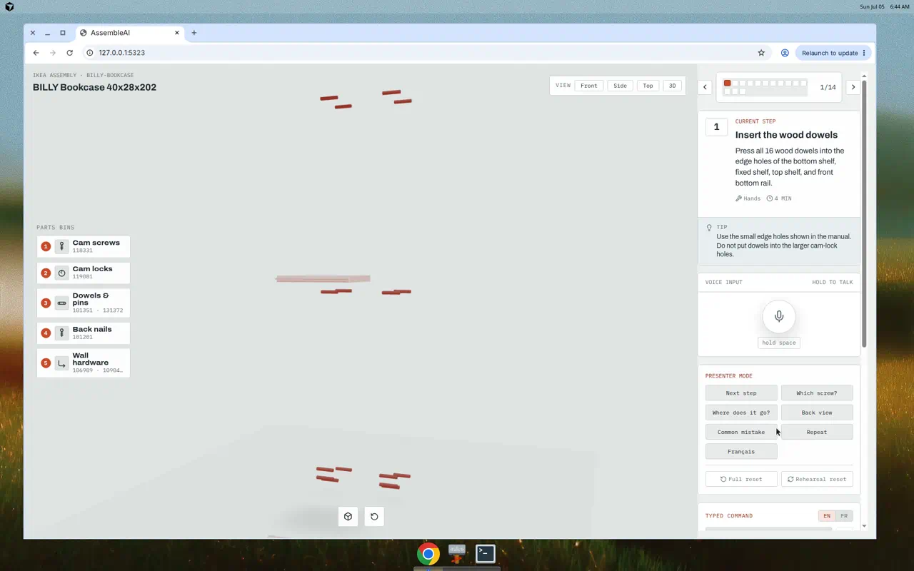
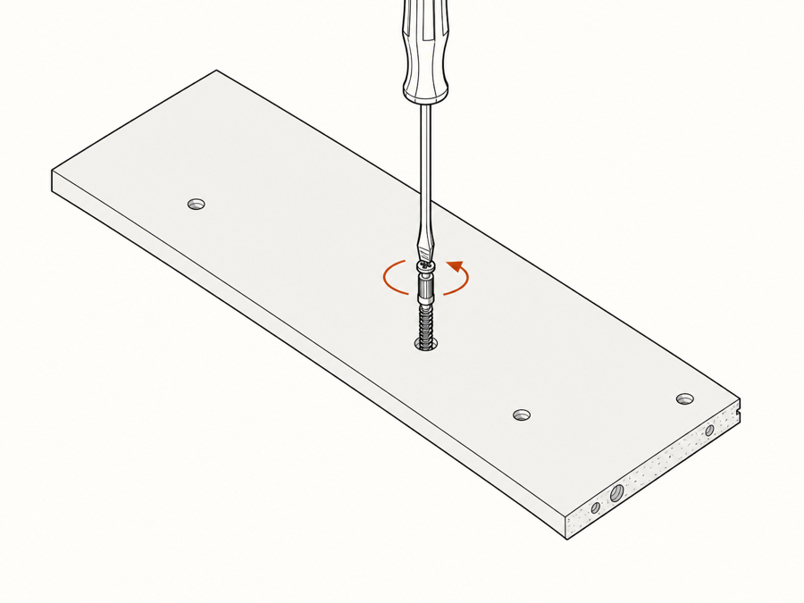
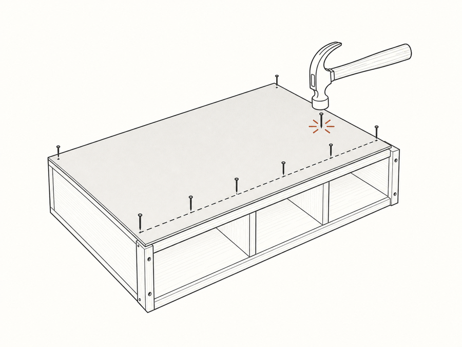

AssembleAI is a voice-driven 3D assembly copilot. Speak a question and the model answers spatially — camera moves, the right part glows, and a short reply confirms it. Your hands never leave the furniture.
Hold Space and ask: “Which cam screw should I use?”

Hold space. Web Speech API or a server-side /api/stt endpoint for any microphone — even Ray-Ban Meta glasses.
Deterministic parser covers the demo script offline; swap in an LLM endpoint with one env var.
Camera, highlights, explode level, and step state update instantly via the manifest-driven viewer.
TTS speaks a one-liner after the model has already changed. You hear what you already see.
Ask about a part and it lights up everywhere at once: on the 3D model, in the parts rail, and inside the transcript. Mono part codes match the printed manual, so 118331 means the same thing on screen and in the bag of screws.

Upload a photo mid-build. A Gemini-backed vision check detects which step you're on and flags what looks off — with a manifest-aware offline mock when there's no network.

No mic? Typed commands. No WebGL? Fallback line drawing. No network? Offline intent parsing and a mock photo check. Presenter Mode gives one-click buttons for every critical utterance, plus full and rehearsal resets.
No accounts, no API keys required. The full BILLY walkthrough runs offline in Chrome.